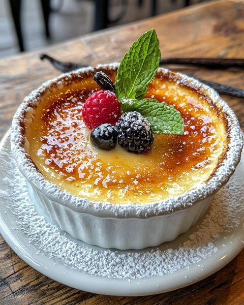

La crème brûlée est un dessert traditionnel du restaurant Le Fiasco, préparé avec une crème onctueuse à base de lait, de beurre et d'œufs, servie dans des ramequins individuels.
Elle est caramélisée à la perfection avec une croûte croustillante, offrant une combinaison parfaite de textures et de saveurs sucrées.
Ingrédients : |
Plat |
|---|---|
|
 |